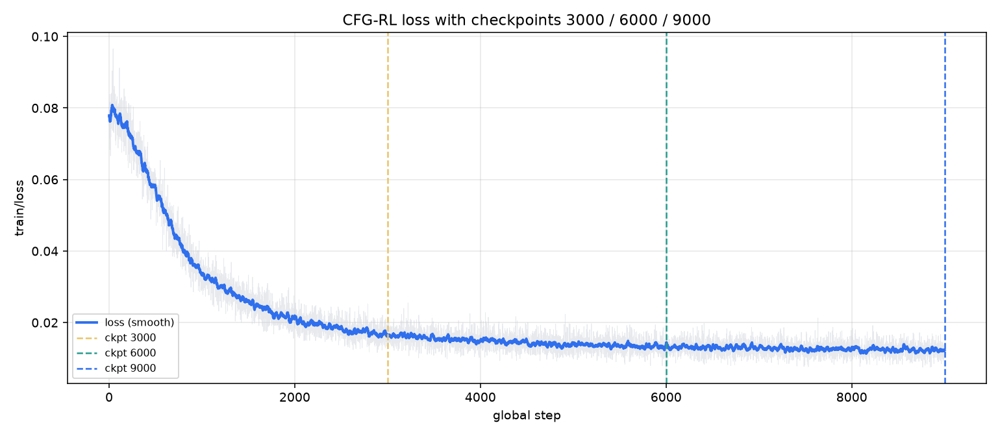
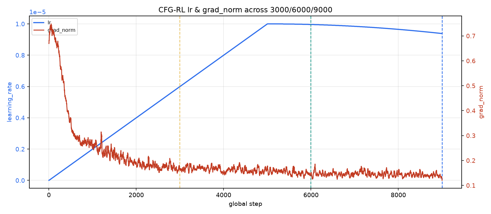
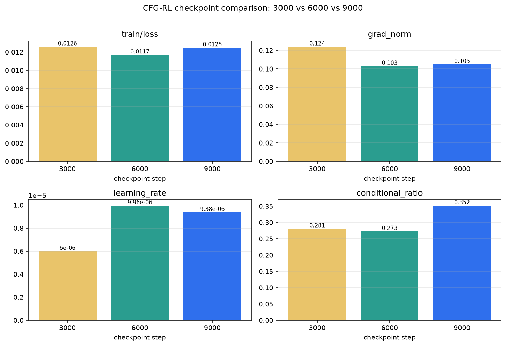
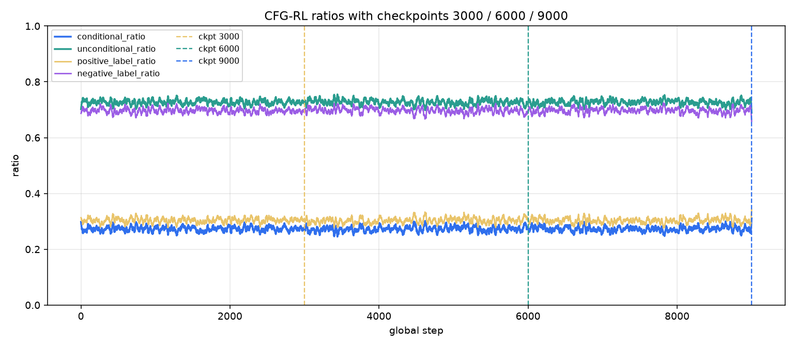

训练日志指标对比（非仿真成功率）。权重：6000与9000仍在盘；3000权重已删，指标来自日志。
| ckpt | loss | mae_n/a | lr | grad_norm | cond | pos_label | |---:|---:|---:|---:|---:|---:|---:| | 3000 | 0.0126 | - | 6e-06 | 0.124 | 0.281 | 0.312 | | 6000 | 0.0117 | - | 9.96e-06 | 0.103 | 0.273 | 0.305 | | 9000 | 0.0125 | - | 9.38e-06 | 0.105 | 0.352 | 0.383 |


